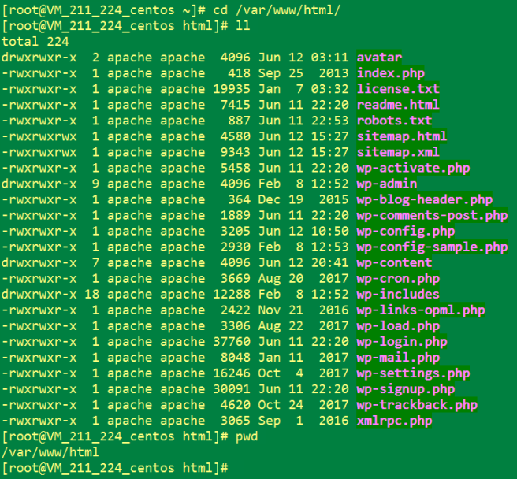

1. 前言
现在网上虽然有大量WAMP、LAMP、LNMP环境部署的文章，但是不少都过期了或者没有完整的体系、或者没有说明环境版本、再不然就是太罗嗦找不到部署重点。因为环境和版本的各种问题，我在云服务器上面部署的时候碰了不少壁。
这篇笔记是我在全新安装的、干净的Centos7.4系统的基础下，重复部署了5次LAMP环境之后总结出来的，尽量只罗列出安装环境所用到的每个命令步骤以及说明，不含多余的东西，安装目录也基本使用了默认目录，没有去改动，便于大家复制部署。
至于WAMP与LNMP不在本文讨论范围内，主要因为WAMP比较简单。而就个人而已，相比于Nginx更习惯Apache，所以最终选了LAMP。
2. 安装软件说明
| 英文缩写 | 释义 | 说明 |
|---|---|---|
| 适用平台 | 本地物理机/本地虚拟机/云服务器 | 本文使用的是 腾讯云CVM服务器 |
| LAMP | Linux + Apache + Mysql + PHP | Web应用软件集成环境（Linux系统） |
| L | Linux系统 | 本文使用的版本号是Centos 7.4.1708 |
| A | Apache | 本文使用的版本号是2.4.6 |
| M | MariaDB / Mysql | 本文使用的是MariaDB 5.5.56 |
| P | PHP | 本文使用的版本号是5.6.36 |
2.1. 关于MariaDB数据库
MariaDB 是 Mysql 的分支版本，完全兼容 Mysql。
本文的操作系统是基于 Centos 的，Centos 默认使用的就是 MarriDB。之所以不使用 Mysql，是因为 Mysql 被 Oracle 收购后存在闭源风险，因此建议使用 MariaDB。
2.2. 关于PHP版本
另外，出于系统安全起见，这里特别提及一下PHP的版本号问题：
2018年01月22日公布了一个 CVE-2018-5711: PHP GD库拒绝服务漏洞：
https://help.aliyun.com/noticelist/articleid/20788282.html
大概意思就是若PHP开启了GD库模块，那么就有可能被一张恶意GIF搞到CPU满荷死机（现在WordPress普遍都会使用timthumb.php对缩略图进行缓存优化以加速网站访问，这个功能会用到GD库）。
受这个BUG影响的PHP版本：
- PHP 5 < 5.6.33版本
- PHP 7.0 < 7.0.27版本
- PHP 7.1 < 7.1.13版本
- PHP 7.2 < 7.2.1版本
这篇文章我使用的是5.6.36版本。之所以没有选择最新的PHP 7.x版本，是因为LAMP环境下，PHP还要安装与之配套版本的phpMyAdmin让PHP访问数据库。而我没有刻意去找与 7.x配套的phpMyAdmin，所以用了5.6.36。其实5.x还是没什么所谓，只要注意不要安装有问题的版本就好。
顺便一提，windows环境还要区分线程安全版本和非线程安全版本，至于为什么自行百度。但本文说的是Linux环境，就无需考虑了。
3. LAMP环境安装
3.1. 安装操作系统：Linux - CentOS Linux release 7.4.1708 (Core)
操作系统安装过程略，因为无论是在本地物理机、虚拟机，还是在云服务器，都是可以傻瓜式安装，此处就不多言了。
查看系统版本号:
cat /etc/redhat-release
更新操作系统（可选，建议）：
yum clean all
yum -y update
3.2. 安装Apache/2.4.6 (CentOS)
安装默认Apache：
yum -y install httpd
查看Apache版本号：
apachectl -v
启动Apache：
systemctl start httpd
使得Apache开机启动：
systemctl enable httpd
测试Apache是否安装成功，浏览器打开网址：
注意，若打不开，检查下：
- ① 防火墙要开放80端口入网规则
- ② 若是云服务器IP要改成公网地址
- ③ 若是云服务器要配置安全组策略开放80端口
为WordPress开启mod_rewrite模块功能（用于支持“固定链接”和“站点网络”功能），使用vi打开Apache配置文件：
vi /etc/httpd/conf/httpd.conf
定位到<directory>段修改下列语句，其他部分不用修改。
AllowOverride None 修改为 AllowOverride All
定位到<directory “/var/www”>段修改下列语句，其他部分不用修改。
AllowOverride None 修改为 AllowOverride All
定位到<directory “/var/www/html”>段修改下列语句，其他部分不用修改。
AllowOverride None 修改为 AllowOverride All
至此Apache安装完成。
注意（这些先记下来，不用动，后面有用）：
- ① 此时Centos会多了一个用户apache，用户组为apache。
- ② Apache的html项目默认路径为：
/var/www/html
3.3. 安装MariaDB-5.5.56
安装默认MariaDB：
yum install mariadb-server mariadb
启动MariaDB：
systemctl start mariadb
因首次安装，配置MariaDB：
mysql_secure_installation
此时会问你几个问题：
Enter current password for root (enter for none):
要求输入root用户当前密码，由于没有，直接回车不要输入任何东西，不然不能往下
Set root password? [Y/n]
是否设置root用户密码，选Y， 然后自己设置密码
Remove anonymous users? [Y/n]
是否移除anonymous 用户，选Y，这个用户仅用于测试，在服务器上可能有提权隐患
Disallow root login remotely? [Y/n]
是否禁止root用户远程登录，选Y， 为了安全起见，等下再建一个用户用于远程访问。
一般情况下服务器也不应该开放3306端口（除非要迁移数据），容易被攻击。
Remove test database and access to it? [Y/n]
是否移除测试数据库，选Y， 没什么用
Reload privilege tables now? [Y/n]
是否重载权限表使所有设置生效，选Y
使得MariaDB开机启动：
systemctl enable mariadb
连接MariaDB数据库，输入刚才设置的密码：
mysql -u root -p
创建wordpress数据库（后面部署WordPress要用到，记住数据库名wordpress）：
create database wordpress;
建议创建一个WordPress专用的数据库用户wpUser ，而不要用root用户：
create user wpUser identified by 'wpPasswd';
授予其wordpress数据库所有权限并可用于远程登陆（但平时不要开放远程登陆端口，可通过防火墙或云服务的安全组策略对3306端口进行拦截）：
grant all privileges on wordpress. to 'wpUser'@'%' identified by 'wpPasswd' with grant option;
刷新权限表使前面设置生效：
flush privileges;
断开数据库连接：
exit;
至此MariaDB安装完成。
3.4. 安装PHP 5.6.36
由于PHP官网的源可能比较旧（默认是5.4），这里换一个安装源：
rpm -Uvh https://mirror.webtatic.com/yum/el7/webtatic-release.rpm
若报错：epel-release >= 7 is needed by webtatic-release-7-3.noarch , 先安装这个工具（安装完后重新跑前一个命令）：
yum -y install epel-release
然后看一下有没有我们要装的PHP版本（所列印表单的第二列就是版本号，若看到PHP 5.6相关组件都是大于5.6.33 版本的，则可以安装）：
yum list php*
安装PHP 5.6的组件（这些模块就是从列表中选的，注意不用加后缀）：
yum install php56w php56w-mysql php56w-gd libjpeg* php56w-ldap php56w-odbc php56w-pear php56w-xml php56w-xmlrpc php56w-mbstring php56w-bcmath
PHP 5.6还要额外安装一个加密组件：
yum groupinstall “development tools”
yum -y install mhash mhash-devel mcrypt
另外PHP的配置文件在这里（暂时不需要动）：
/etc/php.ini
查看PHP版本号：
php -v
至此PHP安装完成。
3.5. 安装phpMyAdmin
这个工具是通过web界面管理数据库的（Web版本的数据库客户端工具），依赖于PHP，所以版本要与PHP配套。Centos7自带的phpmyadmin可用于PHP5.x，直接安装就可以了：
yum -y install phpmyadmin
安装完后重启下Apache服务：
systemctl restart httpd.service
测试phpMyAdmin是否安装成功，浏览器打开网址：
注意，若打不开，检查下：
- ① 防火墙要开放80、3306端口入网规则
- ② 若是云服务器IP要改成公网地址
- ③ 若是云服务器要配置安全组策略开放80、3306端口
- ④ 若部署在云服务器，不建议放权打开这个地址
使用vi命令修改phpMyAdmin的配置文件用于连接数据库：
vi /etc/phpMyAdmin config.inc.php
由于使用MariaDB / Mysql数据库，很多选项保持默认值即可，只要把刚才设置的数据库帐密设置进去即可：
$cfg['Servers'][$i]['user'] = 'wpUser';
cfg['Servers'][$i]['password'] = 'wpPasswd';
最后重启下Apache服务：
systemctl restart httpd.service
至此phpMyAdmin安装完成，LAMP环境安装完成。
3.6. 安装WordPress 4.9.4中文版
由于Centos7的官方源都是英文版，可以去WordPress的官网下载中文版：
下载回来后，上传并解压到Apache的html项目目录下：
/var/www/html
上传可使用FTP（后面再说安装步骤），也可使用rz工具（推荐，更方便），rz安装命令如下：
yum install lrzsz
上传wordpress压缩包：
rz
上传后，这里有两种处理方式：
- ① 直接解压 wordpress根目录到/var/www/html目录下，以后用于访问wordpress站点的URL为：http://127.0.0.1/wordpress
- ② 不要wordpress根目录，只把里面的内容解压到/var/www/html目录下，以后用于访问wordpress站点的URL为：http://127.0.0.1
本文选择的是第 ② 种，因为我只需要部署wordpress一个web项目，而且注册了域名。如果所有URL地址都加了wordpress目录，别人访问麻烦而且丑。
解压wordpress，并删除wordpress根目录：
unzip wordpress.zip
mv -r ./wordpress/* .
rm -rf wordpress/如下图所示，此时我的wordpress部署位置是这样的（直接在/var/www/html目录下，且没有wordpress目录）：

通过确认Apache配置文件/etc/httpd/conf/httpd.conf，可以发现这两个配置项：
user apache
group apache
说明WordPress以后会以apache用户在/var/www目录下进行读写操作，因此为了避免因为权限问题导致读写失败，需修改目录权限。
设置http根目录/var/www的所有组为apache：
chown -R :apache /var/www
设置http根目录/var/www的所有者为apache：
chown -R apache /var/www
设置http根目录/var/www的所有组下所有用户具有读写权限：
chmod -R 775 /var/www
3.7. 安装FTP
一般情况下，到这里为止WordPress就不会因为权限问题、因为无法读写/var/www目录，导致无法升级安装主题、插件。
但如果WordPress还是提示需要FTP进行安装升级，可以继续加一个FTP用户。
安装FTP服务：
yum install -y vsftpd
启动FTP：
systemctl start vsftpd.service
使得FTP开机启动：
systemctl enable vsftpd.service
为了安全起见，取消FTP匿名登录：
vi /etc/vsftpd/vsftpd.conf
把第一行的 anonymous_enable=YES ，修改为NO
如果这里图方便，可以为root用户开放FTP权限，编辑这两个文件，用#注释root即可（但是如果是在云服务器，不建议这么做）：
vi /etc/vsftpd ftpusers
vi /etc/vsftpd user_list
添加一个Apache专用的FTP用户apacheftp：
adduser -d /var/www -g apache -s /sbin/nologin apacheftp
命令解析：使用命令(adduser)添加apacheftp用户，不能登录系统(-s /sbin/nologin)，用户文件夹在(-d /var/www)，属于组apache(-g apache)
若出现这个提示，不用管：
adduser: warning: the home directory already exists.
ot copying any file from skel directory into it.
设置apacheftp用户密码：
passwd apacheftp
添加用户apacheftp到ftp用户组， 这样apacheftp就同时属于ftp和apache两个组：
usermod -a -G ftp apacheftp
重启FTP服务：
systemctl restart vsftpd.service
最后打开浏览器：http://127.0.0.1 ，就可以开始配置Wordpress了。
初始安装会在页面要求设置数据库的库名、帐密，设置为前文设置的值即可。
若以后需要更改数据库配置，可在 /var/www/html/wp-config.php 中进行修改。
至此WordPress安装完成。
3.8. 可选：安装防火墙firewalld
服务器上为了安全起见，建议打开防火墙，Centos默认已安装好firewalld，但处于关闭状态。
查看防火墙状态：
firewall-cmd --state
开启防火墙：
systemctl start firewalld
永久放开HTTP 80端口、FTP服务（含20/21端口）、远程登录 22端口、Telnet 23端口：
firewall-cmd --add-port=80/tcp --permanent
firewall-cmd --add-service=ftp --permanent
firewall-cmd --add-port=22/tcp --permanent
firewall-cmd --add-port=23/tcp --permanent
重载防火墙规则：
firewall-cmd --reload
查看当前的防火墙规则：
iptables -L -n
设置防火墙为开机启动：
systemctl enable firewalld
至此LAMP + WordPress的基本环境全部部署完成。
4. 后话：几个重要的配置文件
① Apache-httpd服务的配置文件，主要用于配置Apache的rewrite模块功能：
/etc/httpd/conf/httpd.conf
② PHP的配置文件（若在win环境用于打开关闭php的扩展模块； 若在linux环境没什么用，要用哪些模块需要直接安装即可）：
/etc/php.ini
③ phpMyAdmin配置文件，其利用PHP在网页连接数据库，若数据库配置变更需要修改此配置文件：
/etc/phpMyAdmin/config.inc.php
④ Wordpress配置文件，若数据库配置变更需要修改此配置文件，另外wordpress的某些自定义配置也需要用到此配置文件：
/var/www/html/wp-config.php
⑤ Mariadb配置文件，后续需要优化数据库时要修改这些配置文件：
/etc/my.cnf # 此配置文件引用了 /etc/my.cnf.d 目录下的配置，不建议改动，避免Mariadb升级时覆盖掉
/etc/my.cnf.d/server.cnf # 一般情况下修改这个配置文件即可
/etc/my.cnf.d/client.cnf
/etc/my.cnf.d/mysql-clients.cnf